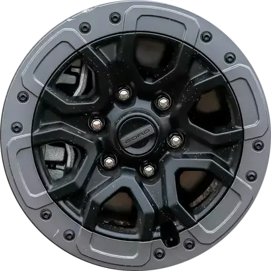

Це ну типу як автівка. При ховере на коліщатах та фарах є якийсь ефект. При натасканні та утриманні кнопки миші на дверцятах та вікнах якийсь ефект також присутній.

За допомогою трансформації можна певним чином впливати на елементи сторінки.
Задається трансформація властивістю transform та її значеннями. При вказані відсоткових значень відсотки беруться від розміру самого об’єкта.
НЕ ПРАЦЮЄ з рядковими об'єктами!
transform: translate(x, y);
Зміщує елемент на нове місце відносно початкового положення вправо та вниз через координати X та Y.
transform: scale(x, y); - задає масштабування для елементу по окремої осі X та Y
transform: scale (n); - (n — значення) задає масштабування однакове для обох осей
Масштабує елементи (робить більшими або меншими).
При застосуванні scale зі значенням більше за 1 для картинок, буде псуватись якість картинки тому щоб уникнути цього варто експортувати картинку трішки більшого розміру та вказувати для неї макетні розміри за допомогою властивості max-width
transform: rotate(deg);
Повертає елементи: позитивні значення (20deg) повертають елемент по годинниковій стрілці, негативні - проти годинникової стрілки.
transform: skew(xdeg, ydeg);
Нахиляє елементи.
transform-origin: ___ ___;
Дозволяє змістити центр трансформації, щодо якого відбувається зміна положення/розміру/форми елемента. Значення може бути відсоткове, піксельне та словесне (top, left, right, bottom)
Переміщення елемента в 3D-просторі. Крім вісей X та Y додається вісь Z. Вісь Z працює лише з `perspective`.
`perspective`, `perspective-origin` (перспектива) потрібні для 3D трансформацій. Встановлює глибину та змінює точки початку координат.
Задається батьківському елементу!!!
perspective: 400px;
perspective-origin: center;
transform: rotateX(0);
Обертають елемент у 3D-просторі.
`backface-visibility`
Відображення зворотної сторони об'єкта (напр., ефект
повертання картки). `backface-visibility: hidden;` - приховує
відображення задньої сторони.
Це ну типу як автівка. При ховере на коліщатах та фарах є якийсь ефект. При натасканні та утриманні кнопки миші на дверцятах та вікнах якийсь ефект також присутній.